Rooftops · 1 → 2
Mean error: 1.39 px
A few overlapping photos, hand-picked matches, and a wider view.
I stitched two horizontal scenes and a four-shot vertical panorama using hand-picked matches and homographies.
I stayed in the same spot and tilted the camera left/right or up/down. That kept the camera center roughly fixed, so I could align the overlapping views with homographies.
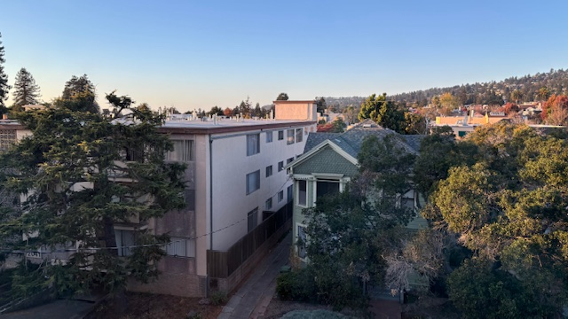
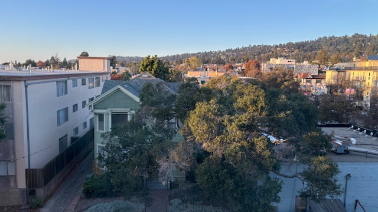
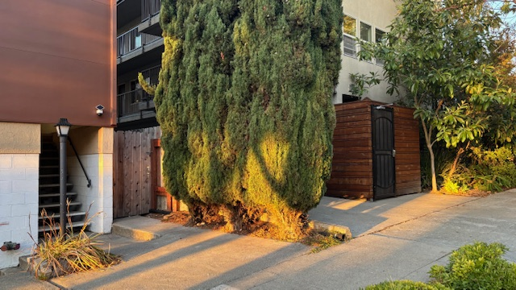
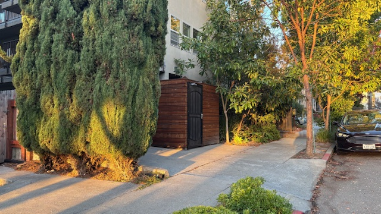
Four shots, tilting upward. I matched neighboring photos.
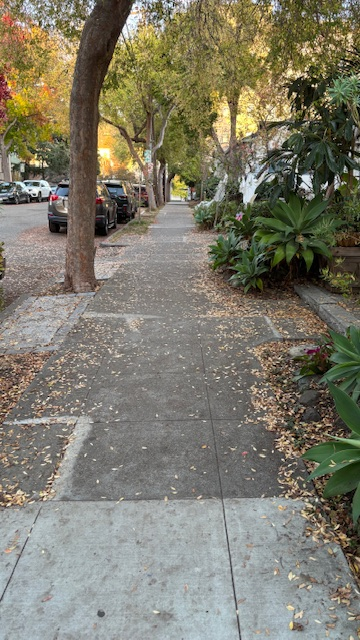
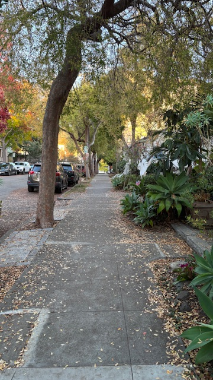
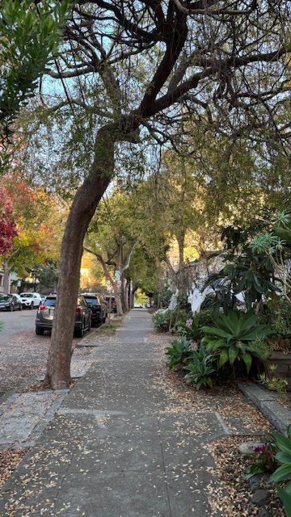
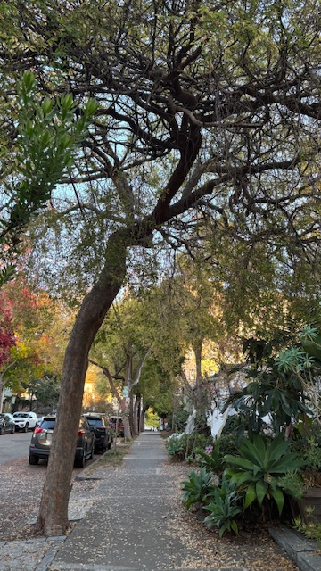
I clicked eight matching points per pair with plt.ginput, keeping the same order in both photos. All point coordinates used .
I fixed the bottom-right entry to 1, leaving eight unknowns. After applying the matrix, I divided by the third coordinate:
Each match gave two equations. My computeH solved the resulting 16 × 8 system with np.linalg.lstsq:
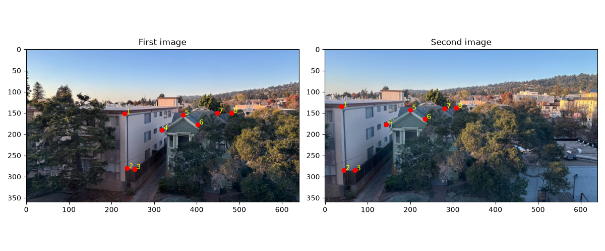
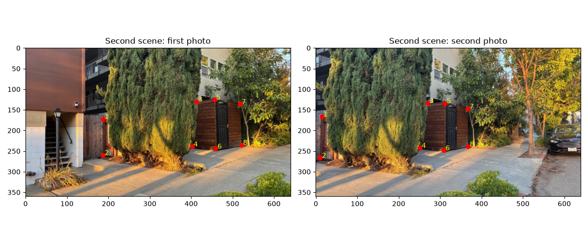
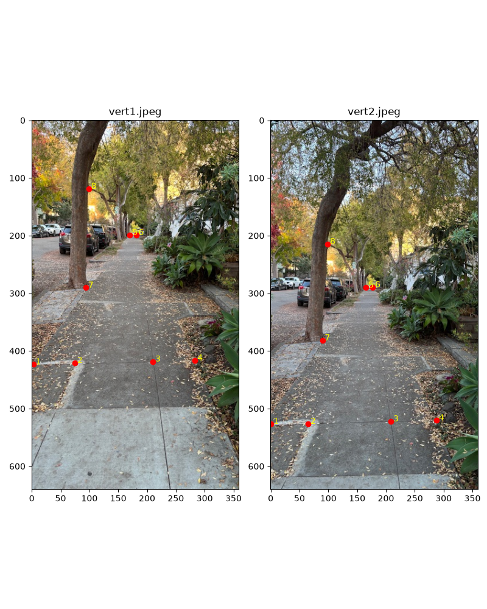
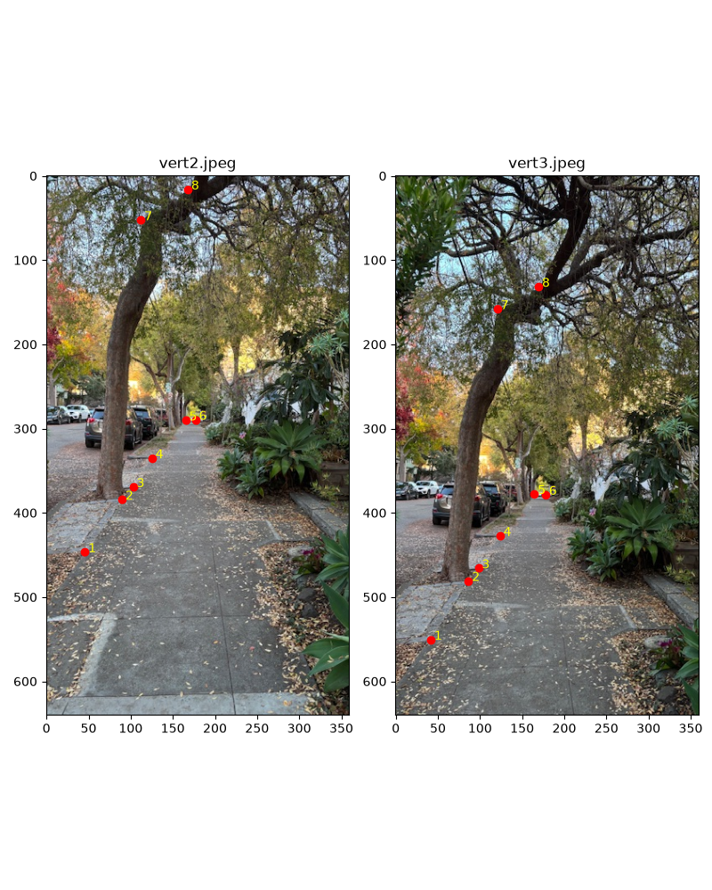
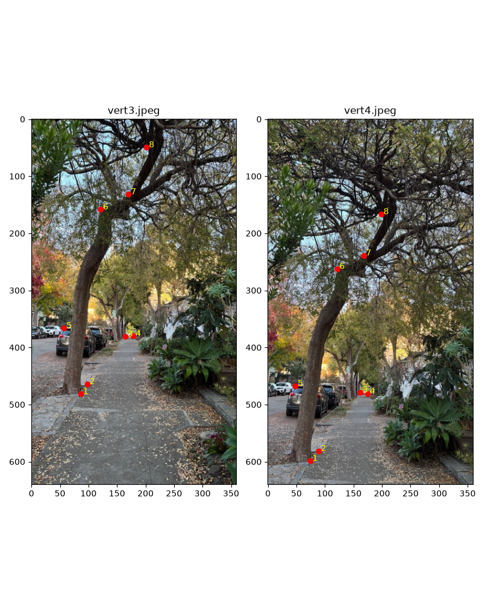
Source → destination, rounded. Errors are the mean distance from mapped points to clicked matches, in pixels.
Mean error: 1.39 px
Mean error: 1.26 px
Mean error: 2.00 px
Mean error: 2.15 px
Mean error: 1.68 px
I tested the warp on two window photos first, mapping their four inside corners to a rectangle.
I used the transformed corners to size the canvas, then worked backward through the inverse homography to sample each pixel. That avoided holes. I kept offsets for negative coordinates and a mask for valid pixels.
I rounded to the closest source pixel. Faster, but the window edges looked a bit jagged.
I mixed the four neighboring pixels using their fractional distances. The edges looked smoother, though slightly softer.
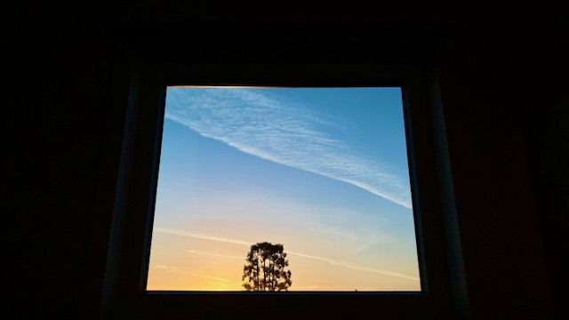
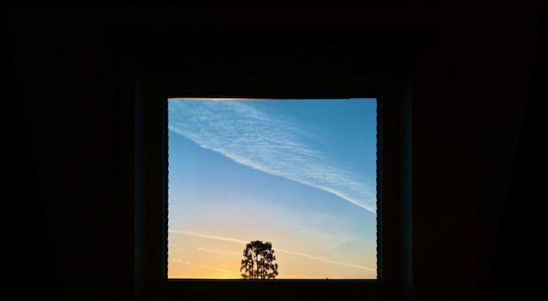
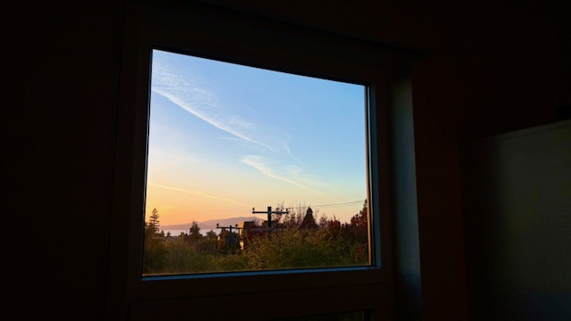
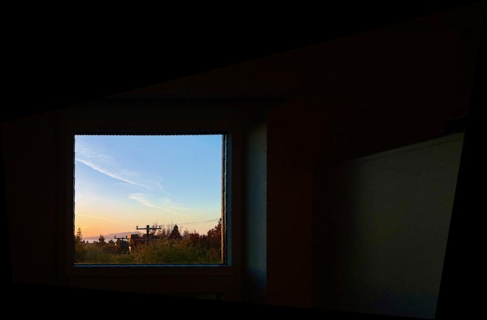
Both openings straightened out. I used destination corners (0, 0), (300, 0), (300, 260), and (0, 260), so the proportions were chosen rather than measured. Only the window plane was rectified. In both window images, nearest neighbor clearly shows some jagged edges in the window frame, as well as in the more high frequency areas.
| Image | Nearest neighbor | Bilinear |
|---|---|---|
| Window 1 | 1.183 | 1.554 |
| Window 2 | 2.106 | 2.738 |
Single-run timings, excluding saving and display. Bilinear took longer.
I warped the photos onto a shared canvas with bilinear interpolation, then reused the two-band idea from Project 2 to soften the seams.
I blurred each image with for the low band and subtracted that blur for the detail band. In the overlap, I chose pixels farther from their image boundary for a sharp mask, then blurred that mask for the low-band transition. Same-sized bands, no downsampling.
was the sharp mask; was its Gaussian blur. I filled missing regions from the other photo before blurring and copied singly covered pixels unchanged. Only the final result was clipped.
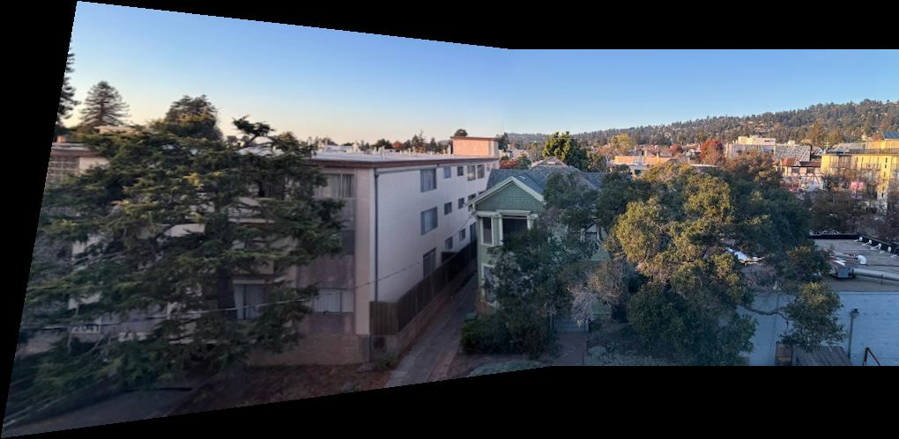
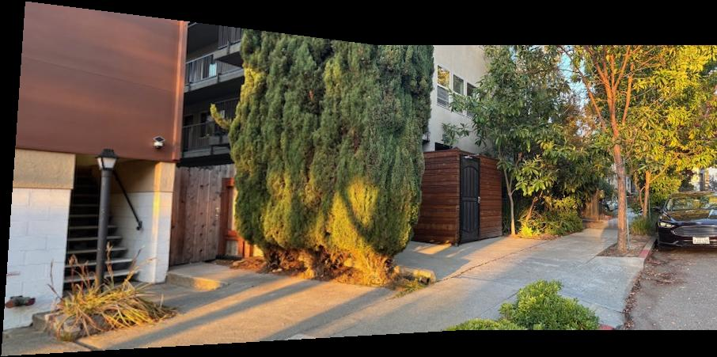
I used photo 2 as the reference. Photo 1 mapped straight into it; photo 3 used the inverse of 2 → 3, and photo 4 went through 4 → 3 → 2. I warped each original once, then blended in 1, 3, and 4 while updating the validity mask.
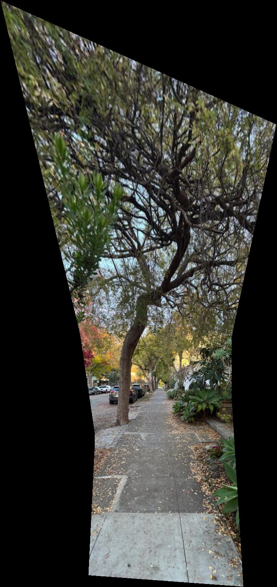
The sidewalk and canopy joined, but the top became noticeably stretched. Projecting this tall view onto one plane likely contributed, along with error from chaining homographies.
The neighboring fits averaged 1.7–2.1 pixels of error. That didn't guarantee a distortion-free panorama. A cylindrical or spherical projection would be worth trying; blending alone couldn't fix the geometry.